フェリーで小豆島に向かう。
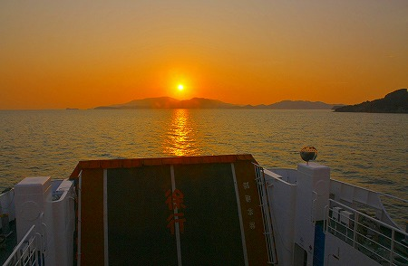
日の出を迎えたのは到着前の船中だった。眠い…。
小豆島には
あるテーマを持ってやってきたのだが、早朝でまだレンタカーも借りられないし、港から歩いて30分ほどの鹿島神社に行くことにした。
朝焼けに照らされた鳥居がまぶしい。とびだしちゆういの看板もまぶしい。
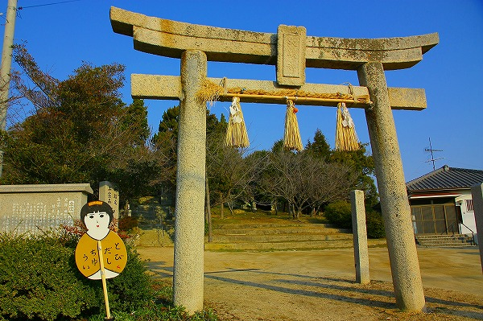
拝殿に由来書きのようなものがあったような気がしたが内容は失念してしまった。
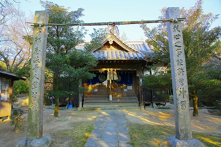
お目当ては参道の傍らにあるこちらの掲示板のようなモノ。
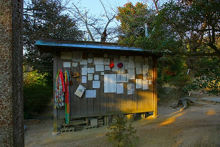
願い事を記した紙が貼られているのだが、これをよーく見てみると…
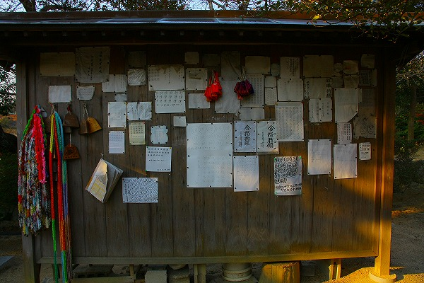
顔がたくさん描かれているのだ！
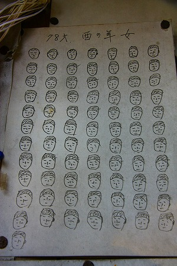
これは
以前紹介した祈願文の一種なのであろう。
祈願者の
年齢の数だけ顔を描いて奉納するのだ。
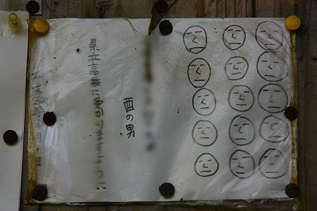
それにしても顔がズラリと並ぶというのは
バグったゲーム画面のようで不気味でもあり、ユーモラスでもあり、シュール、でもある。
さすがに顔を大量に描くのはシュールすぎる、という奉納者の判断なのだろうか。
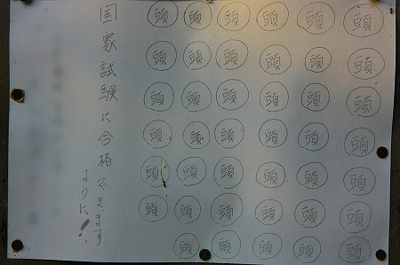
「頭」という字を歳の数だけ書いた祈願文も多く見られた。
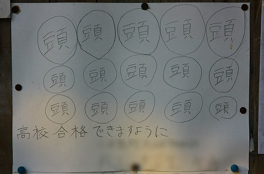
ちなみに上二つは親子だと思う。親も子も人生試験の連続ですなー。
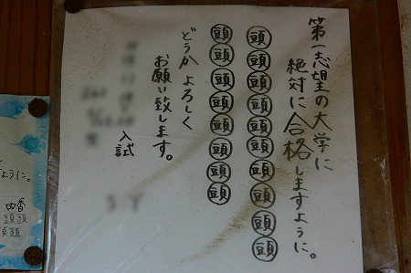
頭を差し出す祈願文ゆえに頭に関するお願い、すなわち
受験関係の祈願文が多かった。
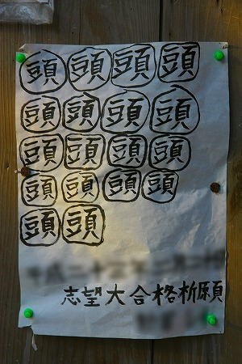
こちらは教員採用試験合格祈願。
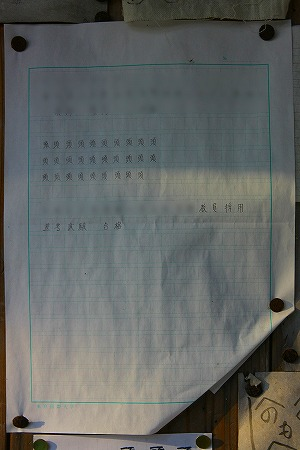
教わる方も教えるほうも試験だらけの神頼み、ですねー。
同じフォーマットの奉納物。
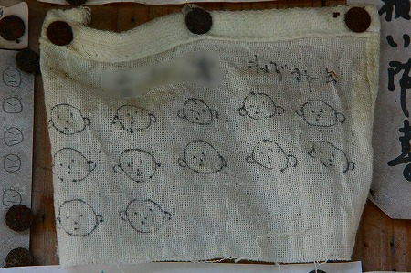
12歳
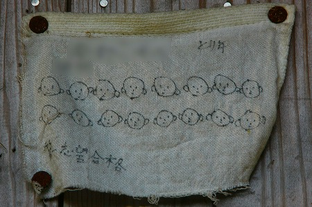
16歳
…子供たちの学業成就を願って親が奉納したのだろう。
つぶらな瞳がたまらない。
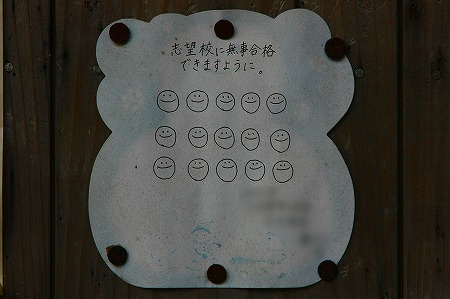
こちらはややポップなテイスト。
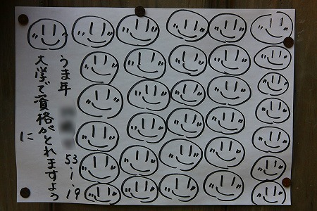
描くのが簡単だからか、このスマイルちゃんスタイルも多かった。
こちらも同じような絵柄だが40個描かれている。
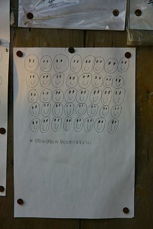
下に行くに従って形状が崩れてきて、
段々ホラー仕立てっぽくなっていくところが味わい深い。
頭の病気、治るとイイですね。
昭和60年に奉納された双子兄弟の祈願文。多分この中では一番古い。
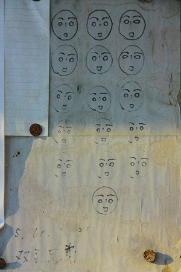
28歳。国家試験合格祈願。
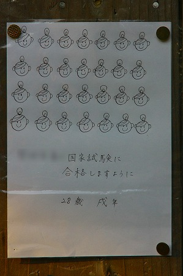
私自身は試験、資格にほぼ縁の無い生活をしているのでリアル感に欠けるのだが、本当に一生試験続きなんですね。
こちらの顔は結構イイ感じ。
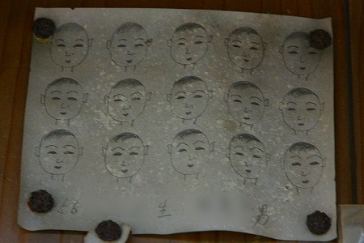
同じ絵柄のモノが。
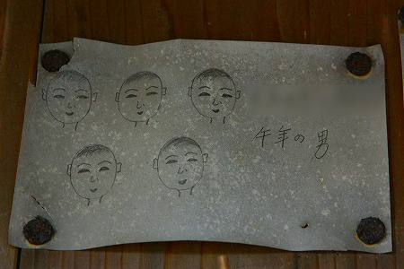
兄弟のものを親か爺婆が奉納したのだろう。
真っ黒な目がジーっとこちらを見つめていた。
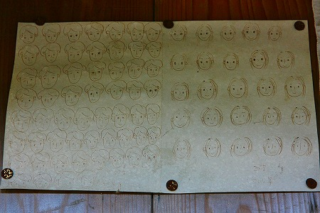
左は57個の男性の顔、右は25個女性の顔。
親子なのだろう。そして娘が父の文も顔を描いたのだろう。偉い！
「へのへのもへじ」パターンもいくつかあった。
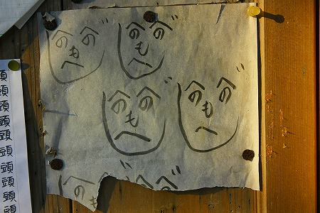
まあ、これが一番簡単かな〜。
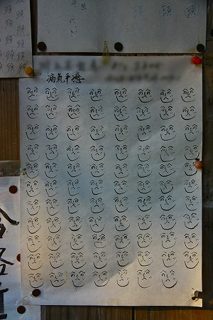
ご高齢の方はへのへのもへじじゃないと描ききれないものなあ。
一枚だけハンカチが奉納されていた。
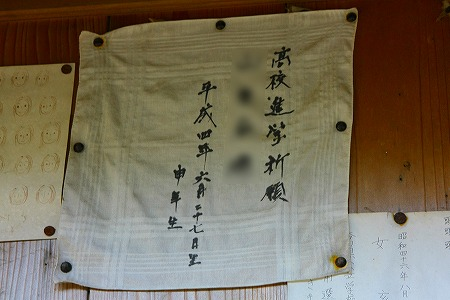
このハンカチの模様、どこかで見たことがあると思ったら合格祈願で有名な大阪の
家原寺で売られているハンカチじゃないか。
わざわざ大阪まで出向いて購入し、地元の鹿島神社に奉納したのだろうか。
受験の御守りも数多く吊るされている。
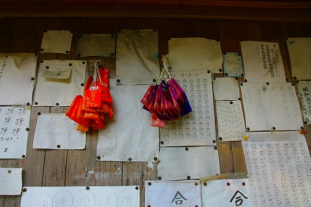
もうひとつ吊るされていたのがこちら。
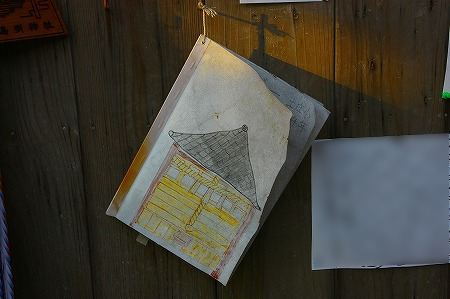
地元の小学生の課外授業のレポートなのだろう。
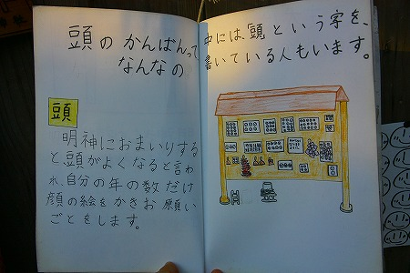
興味深く読ませていただきました。若きフィールドワーカー達よ、とても参考になったよ。ありがとう！
3月の朝は寒い。夕焼けのような長い影がおっとりとした彼岸過ぎの日の出を映していた。
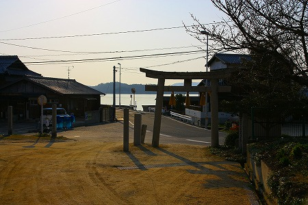
鳥居のすぐ先は海。
この旅の途中、角田光代の「
八日目の蝉」を読んでいた。物語の大半が小豆島を舞台にした小説である。
その中で瀬戸内海を鏡のような海、と表現している部分が妙に印象に残った。
海辺に立ってみて納得。 成程、波もほとんどないとろんとした海面はまるで粘膜のようだ。
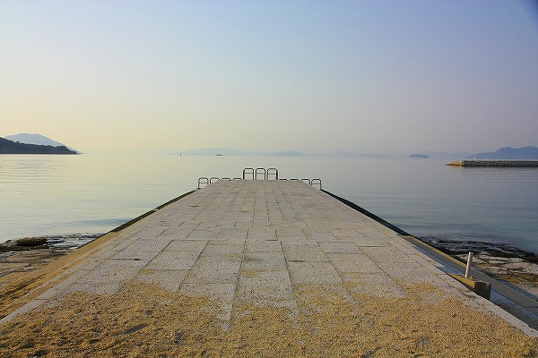
震災から半月も経たない時期だったので余計そう思えたのかもしれない。
というわけで、この後しばらく小豆島シリーズが続きます。